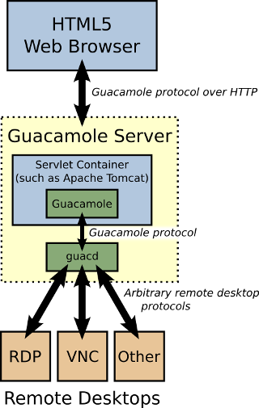

Implementation and architecture#
Guacamole is not a self-contained web application and is made up of many parts. The web application is actually intended to be simple and minimal, with the majority of the gruntwork performed by lower-level components.
{kind=link}
Users connect to a Guacamole server with their web browser. The Guacamole client, written in JavaScript, is served to users by a webserver within the Guacamole server. Once loaded, this client connects back to the server over HTTP using the Guacamole protocol.
The web application deployed to the Guacamole server reads the Guacamole protocol and forwards it to guacd, the native Guacamole proxy. This proxy actually interprets the contents of the Guacamole protocol, connecting to any number of remote desktop servers on behalf of the user.
The Guacamole protocol combined with guacd provide protocol agnosticism: neither the Guacamole client nor the web application need to be aware of what remote desktop protocol is actually being used.
The Guacamole protocol#
The web application does not understand any remote desktop protocol at all. It does not contain support for VNC or RDP or any other protocol supported by the Guacamole stack. It actually only understands the Guacamole protocol, which is a protocol for remote display rendering and event transport. While a protocol with those properties would naturally have the same abilities as a remote desktop protocol, the design principles behind a remote desktop protocol and the Guacamole protocol are different: the Guacamole protocol is not intended to implement the features of a specific desktop environment.
As a remote display and interaction protocol, Guacamole implements a superset of existing remote desktop protocols. Adding support for a particular remote desktop protocol (like RDP) to Guacamole thus involves writing a middle layer which “translates” between the remote desktop protocol and the Guacamole protocol. Implementing such a translation is no different than implementing any native client, except that this particular implementation renders to a remote display rather than a local one.
The middle layer that handles this translation is guacd.
guacd#
guacd is the heart of Guacamole which dynamically loads support for remote desktop protocols (called “client plugins”) and connects them to remote desktops based on instructions received from the web application.
guacd is a daemon process which is installed along with Guacamole and runs in the background, listening for TCP connections from the web application. guacd also does not understand any specific remote desktop protocol, but rather implements just enough of the Guacamole protocol to determine which protocol support needs to be loaded and what arguments must be passed to it. Once a client plugin is loaded, it runs independently of guacd and has full control of the communication between itself and the web application until the client plugin terminates.
guacd and all client plugins depend on a common library, libguac, which makes communication via the Guacamole protocol easier and a bit more abstract.
The web application#
The part of Guacamole that a user actually interacts with is the web application.
The web application, as mentioned before, does not implement any remote desktop protocol. It relies on guacd, and implements nothing more than a spiffy web interface and authentication layer.
We chose to implement the server side of the web application in Java, but there’s no reason that it can’t be written in a different language. In fact, because Guacamole is intended be an API, we encourage this.
RealMint#
Guacamole is now a generalized remote desktop gateway, but this was not always the case. Guacamole began as a purely text-based Telnet client written in JavaScript called RealMint (“RealMint” is an anagram for “terminal”). It was written mainly as a demonstration and, while intended to be useful, its main claim to fame was only that it was pure JavaScript.
The tunnel used by RealMint was written in PHP. In contrast to Guacamole’s HTTP tunnel, RealMint’s tunnel used only simple long-polling and was inefficient. RealMint had a decent keyboard implementation which lives on now in parts of Guacamole’s keyboard code, but this was really the extent of RealMint’s features and usability.
Given that it was just an implementation of a legacy protocol, and that several other JavaScript terminal emulators exist, most of which well-established and stable, the project was dropped.
VNC Client#
Once the developers learned of the HTML5 canvas tag, and saw that it was already implemented in Firefox and Chrome, work started instead on a proof-of-concept JavaScript VNC client.
This client was purely JavaScript with a Java server component, and worked by translating VNC into an XML-based version of the same. Its development was naturally driven by VNC’s features, and its scope was limited to forwarding a single connection to a set of users. Although relatively slow, the proof-of-concept worked well enough that the project needed an online place to live, and was registered with SourceForge as “Guacamole” - an HTML5 VNC client.
As Guacamole grew and became more than a proof-of-concept, the need for speed increased, and the old RealMint-style long polling was dropped, as was the use of XML.
As WebSocket could not be trusted to be supported at the time, and Java had no WebSocket standard for servlets, an equivalent HTTP-based tunnel was developed. This tunnel is still used today if WebSocket cannot be used for any reason.
Remote Desktop Gateway#
A faster text-based protocol was developed which could present the features of multiple remote desktop protocols, not just VNC. The entire system was rearchitected into a standard daemon, guacd, and a common library, libguac, which drove both the daemon and protocol support, which became extendable.
The scope of the project expanded from an adequate VNC client to a performant HTML5 remote desktop gateway and general API. In its current state, Guacamole can be used as a central gateway to access any number of machines running different remote desktop servers. It provides extendable authentication, and in the case you need something more specialized, a general API for HTML5-based remote access.